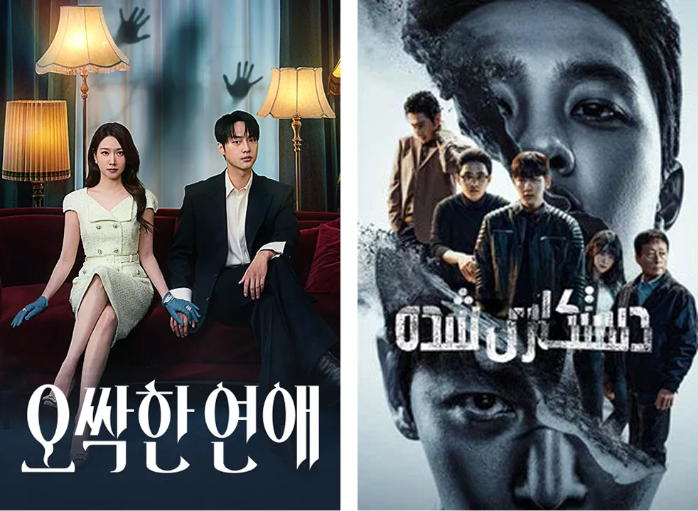

(좌) <이비스의 사람 공부>, (우) <부활수업> 이미지
(출처: EBS 제공)
“2024년 말을 기점으로 방송가에서도 인서트로 점차 많이 사용하기 시작하고 있다. 하지만 여러 가지 이유로 아직은 방송이라는 제도권 미디어에서는 보수적으로 접근하는 편이다.”
Q. AI를 활용해 프로그램을 제작한 것으로 알고 있다. 최근 어떤 프로그램을 제작하거나 준비하고 있는가
(민) 재작년쯤부터 <명의>라는 프로그램을 제작할 때 AI를 처음 사용했다가 매력을 느끼고 가능성을 봐서 작년부터는 AI로만 프로그램을 제작하는 활동을 좀 많이 했다. EBS에서는 AI 단편 극장이라는 프로그램이 론칭돼서 10개의 단편을 만들었다. 올해 4월에는 (AI로) 100% 제작하는 <부활수업>이라는 교양 드라마 프로그램을 론칭해 지금 한창 제작하고 있다.
Q. 최근 방송가에서도 AI 기술을 활용하여 콘텐츠를 제작하는 사례들이 더욱 많아지고 있는 것 같다. 제작 현장에서 이러한 변화를 체감하는지 궁금하다.
(민) 재작년쯤에 <명의> 프로그램에서 최초로 AI씬을 도입할 당시가 2024년 말이다. 이후 서칭을 해보니 다른 방송국에서도 간간히 AI 인서트 씬을 사용하는 경우들이 있었는데, 대부분 2024년을 기점으로 사용하기 시작한 것 같다. 2025년부터는 재연이나 인서트에 AI를 사용하는 프로그램이 기하급수적으로 늘었다. 그리고 올해에는 (아마 EBS가 제일 많이 사용하고 있는 것 같은데) 100% AI로 제작되는 프로그램이 EBS를 시작으로 방송가에 조금 안착하고 있는 모습이어서 이제 진정한 의미의 AI 방송 시대가 오려나 하는 생각을 하고 있다.
Q. 주변에서도 프로그램 제작에 AI를 활용하시는 분들이 많이 있는가
(민) 많다. 아무래도 제가 AI를 적극적으로 활용하는 PD이다 보니까 많은 PD님들이 저한테 물어보는데 (제가 생각하기에는) 적어도 이제 인서트 활용에는 어찌 보면 기본값이 된 것 같다. 예전에 촬영을 하거나 CG로 만들었던 것을 이제는 PD들이 AI로 금방 만들 수 있는 것을 보면, 대부분의 PD들이 AI로 영상을 제작할 수 있는 수준에 도달했다는 생각이 든다.
Q. 계량적으로 말씀하기는 힘들 수도 있겠지만 그래도 비율로 따지면 방송가에서 어느 정도 AI를 활용한다고 보는가
(민) 100% AI 제작이 아닌 기성 프로그램의 일부로 AI를 활용하는 비율은 아직 낮다. 제 생각에는 러닝 타임이 50분이라고 했을 때 AI 활용 비율이 인서트로 들어간다고 하더라도 한 2~3분 정도다. 특히 리얼리티 프로그램 같은 경우에는 인서트로 AI가 들어가는 게 어느 정도 제약이 있을 수밖에 없다. 그도 그럴 수밖에 없는 게 PD들이 AI 제작 노하우나 프로세스를 파악하고 있더라도 AI라는 특수성 때문에 윤리적인 문제도 있고 조금 조심스러운 부분들이 있다. 그래서 일단은 방송이라는 제도권 미디어에서는 약간 보수적으로 접근하고 있다고 생각한다.
Q. AI 기술이 발전함에 따라 방송영상 제작에 활용하는 수준도 달라지는 것으로 보인다. 현재는 어느 정도 수준에 이르렀다고 보는가
(민) AI 영상의 퀄리티나 완성도를 테스트하는 게 있다. 윌 스미스 테스트(Will Smith Test)1)라고도 한다. 가령, 2023년에는 윌 스미스가 스파게티를 먹는 프롬프팅을 했을 때 쉽게 말해서 엄청 이상했다. 물리적인 법칙도 안 맞고 무슨 점토처럼 나왔는데 2024년에 윌 스미스 테스트는 거기서 또 진일보하더니 2025년 말경부터는 사실 거의 실사와 유사한 수준으로 도달한 상황이다. 흔히 기술 성숙기 혹은 S-커브라는 표현을 사용하는데, 모든 기술은 급격하게 발전하다가 성장 그래프가 완만해지는 지점에 도달하게 된다. 이제 AI 영상 기술이 그 완만한 시기에 도달하지 않았나 생각이 들 정도로 많이 발전한 것 같다.
“고인이 된 위인을 되살리는 것 자체가 윤리적인 이슈가 있다. 그 인물에 대해 끊임없이 자문하고 내용에 엄정성을 더해 제작함으로써 이를 극복하려고 노력한다.”
Q. 방송 제작 단계 중 AI 기술에 가장 민감한(혹은 활용성이 큰) 부분이 특별히 있는가
(민) 다양한 논의가 될 수 있을 것 같기는 한데 민감한 부분은 기본적으로는 윤리적 이슈이다. <부활수업> 같은 경우가 가장 민감하게 그것을 인식하고 제작해야 되는 부분이 있다. 고인이 된 위인을 되살렸을 때 이 위인을 되살리는 것 자체도 윤리적인 이슈가 있고, 심지어 그 위인이 말하게 할 때 어떤 콘텐츠를 말하게 할 것인가도 되게 민감할 수가 있다. 실제 저희가 <부활수업>을 준비한 지 이제 1년이 넘었고 제작해서 론칭한 지도 어느덧 한 달이 넘었는데 여전히 주변에서 좀 더 안전한 방법이 없을지 고민해야 한다는 피드백이 온다.
Q. AI 기술을 활용하는데 있어 제작자 입장에서 가장 민감한 부분 중 하나가 초상권이나 저작권 문제일 것 같다. 작업하신 <프리다 칼로2025: 화폭에 담긴 고통의 자아>, <이비스의 사람 공부>, <세월이 가면–AI로 다시 만나는 박인환>, 그리고 최근 <부활수업> 모두 실존 인물들을 다루고 있는데 이런 프로젝트를 진행할 때 이 부분을 어떻게 고려하는지 궁금하다.
(민) (언급한 프로젝트 모두) 윤리적인 문제가 굉장히 상존하는 프로그램이다. 사실 그냥 누가 봐도 윤리적인 이슈를 해결해야 하는 프로그램이어서 그 부분에 대해 고민도 많이 하고 자문도 많이 받아 봤다. 저희가 지금 대처하고 있는 방법은 소위 퍼블리시티권(초상권) 만료인 사후 70년 이상 되는 인물들만 다루고 있다. 만약 70년이 아직 안 됐다고 하면 그 권리를 이양받은 유족의 동의를 받아서 함께 제작하는 방법으로 진행하고 있다.
(민) 그리고 제작단에서는 프롬프팅을 써서 영상이나 이미지를 제작할 때 어떤 스타일로 제작하는 프롬프팅은 지양을 떠나서 금지한다고 스태프들과 공유했다. 일반 사람들도 많이 하셨겠지만 예를 들어 “지브리 스타일로 제작을 해줘”라고 한다면, 엄밀하게 말하면 지브리에서 컴플레인 걸면 할 말이 없는 부분이다. 창작자의 존엄성이나 권리를 함부로 침범해서 만든 거기 때문에 그런 것들은 하면 안 된다. 그래서 어떤 스타일로 제작하는 방식의 프롬프팅은 지양하고, 대신 AI를 사용하더라도 저희만의 스타일로, 저희의 노력으로 제작하게 만든다.
(민) 세 번째는 내용의 부분인데, 고인(故人)의 말을 빌리는 것이기 때문에 함부로 아무 말이나 할 수는 없다. 그러면 소위 말하는 허위 사실을 유포하게 되거나 명예훼손이 될 수도 있다. 그래서 자문단이 굉장히 중요하다. 그 인물을 다룰 때 그 인물에 대한 정보를 엄정하게 심사해 줄 수 있는 대한민국 최고 권위자들을 자문단으로 모신다. 매 회차마다 (프로그램 성격에 맞는) 다른 자문단을 모셔서 내용에 대한 엄정성을 더한 다음에 제작을 진행하고 있다.
“제작비 절감, 일자리 감소의 이슈가 존재하지만 새로운 기술이 나왔을 때 역시 제작자나 PD 입장에서 가장 열광하는 포인트는 내가 그동안은 할 수 없었던 콘텐츠를 창작할 수 있다는 것이다.”
Q. 그간의 경험에 비추어 볼 때 AI 기술이 방송영상콘텐츠 제작에 미친 영향을 장점과 단점으로 구분해 보면 무엇이라고 말할 수 있는가
(민) 사실 새로운 기술이 나왔을 때 제작자나 PD 입장에서 가장 열광할 수 있는 포인트는 물론 제작비 절감도 중요하겠지만, 내가 그동안은 할 수 없었던 콘텐츠를 창작할 수 있다는 것 이다. 예를 들어 <부활수업>도 마찬가지다. 돌아가신 분들을 부활시켜서 그분들의 이야기를 생생하게 듣는 건 그동안에는 쉽게 할 수는 없었다. 물론 배우를 최대한 분장을 시켜서 그에게 배역을 맡길 수는 있었지만, 그렇다고 그 사람을 생생하게 살아나게끔 하고 그 사람의 입을 빌려서 본인 이야기를 하는 콘텐츠를 제작하는 것은 불가능했다. 그래서 창작자 입장에서는 그런 점이 가장 열광 포인트인 것 같다. 이건 이전에 CG가 나올 때도 마찬가지였고 VR이 나올 때도, AR이 나올 때도, 그다음에 AI가 나올 때도 다 마찬가지이다. 결국 핵심은 AI 기술을 활용해서 그동안 만들기 불가능했던 새로운 콘텐츠를 만드는 것이다. 그걸 가능하게끔 만드는 게 (AI 도입의) 핵심인 것 같다.
(민) 반면에 일자리 문제가 있을 수 있다. 실제 제가 AI를 도입해서 작업을 해보다 보니까 막내급 스태프들의 일이 제일 먼저 없어진다. 예를 들어 막내 작가의 경우 메인 작가의 손과 발이 되어서 자료를 찾아주는 역할을 보통은 많이 하는데, 이제는 챗GPT나 제미나이에서 딥 리서치를 시키면 작가가 하는 것보다 훨씬 빠른 시간 내로 나오는 거다. 그러니까 이제는 메인 작가들에게 취재 작가가 크게 필요 없다는 얘기가 나온다. 인서트도 보통 서브 PD 시작할 때 인서트 촬영하면서 입봉하기 마련인데 이걸 AI로 제작해버리면 작게나마 촬영을 해보는 그런 기회가 많이 없어지는 것이다. 그럼에도 불구하고 모든 조직에서 메인급 책임자는 있어야 한다. 그래서 아이러니하게도 이제 막내급들의 자리가 없어지고 메인급들은 살아남게 되는 것인가 하는 씁쓸한 생각이 들었다.
“창작자 혹은 콘텐츠 제작자가 AI를 쓸 때의 핵심 포인트는 이 콘텐츠를 AI로 만들었을 때 사람들이 ‘이건 AI 콘텐츠로 만들 수밖에 없었겠구나’라고 생각할 때다.”
Q. <이비스의 사람 공부>는 ‘국내 최초 전편 AI 제작 방송 프로그램’으로 작년에 화제가 되었다. 기존 방송가의 AI 활용과 어떤 면에서 차이가 나는가
(민) 정확하게는 저를 포함한 4명의 제작자가 <AI 단편극장>에서 각자의 꼭지를 담당했고, 그 중 제가 1화에서 제작한 단편 이름이 <이비스의 사람공부>였다. 총 10개 회차였기에 그 외에 9개의 단편을 더 만들었다. <AI 단편극장>과 기존 제작 프로세스의 차이는 매우 자명하다. 일단은 기존 작업의 경우는 아무리 적어도 10명의 스태프, 예능이나 드라마 같은 경우는 100명이 넘어가는 건 부지기수인데, AI 단편 극장을 할 때는 한 콘텐츠에 대해서 딱 한 명의 제작자가 AI만을 벗삼아 1인 제작을 했다. 한 명의 제작자가 이미지부터 비디오 대본까지 모두 제작하는 원맨 시스템으로 진행을 했다. 예산도 당시 한 편에 대한 제작비가 70만 원이었다. 방송이란 게 보통 한 편당 천만 원이어도 너무 적다고 하는 경우가 많은데 70만 원으로 한 명이 크레딧만 결제해서 한 편의 방송물을 제작했다는 게 가장 큰 차이점이 아닐까 싶다. 당시 자문단료가 10만 원 정도 들어갔고, 나머지 60만 원을 그냥 (AI 프로그램) 구독료로 사용했던 실험적인 콘텐츠 프로젝트였다.
Q. ‘AI로 그려낸 4인4색 단편선’ 기획 당시 어떤 부분에 중점을 두었는지 궁금하다.
(민) 그냥 기존의 제작 공정으로도 만들 수 있는 콘텐츠를 굳이 AI로 만드는 것이 소비자 입장에서 의미가 있을까 생각했다. 물론 이제 공급자 입장에서는 제작비와 시간이 절감된다는 장점은 있지만 ‘이걸 이렇게 싸게 만들었다’는 것이 시청자에게 감동을 주는 포인트는 아니기 때문이다.
오히려 거부감이 들 수도 있고, 노력해서 만들어야 사람들은 울림 있게 받아들이고 호감 있게 받아들인다. 그래서 저의 가장 큰 목표는 AI가 아니면 할 수 없는 콘텐츠를 만들자는 것이었다. 그래서 사료로 남아있는 나폴레옹을 부활시켜 그와 만나는 콘텐츠를 했다. 나폴레옹의 초상화나 실제 존재하는 자료가 있는데, 얼굴이 이렇게 생겼고 키는 어느 정도라는 자료들을 활용해서 나폴레옹을 실제와 똑같게 디지털로 복원시켰다. 그렇게 탄생한 <이비스의 사람공부>는 AGI(Artificial General Intelligence)로 거듭나고픈 AI가, 자신의 창조주인 인간을 더 알기 위해 인간을 배워나간다는 세계관을 가미했는데, AI 프로그램이라는 특성을 좀 더 배가시킬 수 있는 콘셉트이자 기획이라고 생각했다.
Q. AI 프로그램을 제작할 때, 실제 사용하시는 툴은 무엇인가
(민) 툴은 보통 웹 기반과 로컬 기반이 있다. Comfy UI로 대표되는 로컬 기반은 약간 전문적인 영역이고, 웹 기반은 인터넷 서비스로 보다 쉽게 AI에 접근하는 영역이다. 대부분 이미 웹 기반으로 서비스가 나와 있는 툴들을 구독해서 사용한다. 보통 이미지를 먼저 제작하는데, 많이 들어봤던 미드저니나 바이럴 많이 했던 나노바나나, 아니면 중국에서 나온 씨드림(Seedream) 등을 사용해서 먼저 각 컷의 첫 프레임들을 생성한다. 예를 들어 내가 만들고자 하는 콘텐츠가 50개 컷이면 50개의 퍼스트 프레임을 만드는 것이다. 그걸 가지고 스토리보드를 짜놓은 다음에 이미지들을 살아 움직이게 하는 동영상화를 한다. 동영상화는 요즘은 중국에서 나오는 클링(Kling)이라는 툴을 제일 많이 사용하고 시댄스(Seedance)라는 툴도 많이 사용한다. 이 외에도 런웨이(Runway), 루마(Luma), 피카(Pika) 등 다양한 툴이 많다. 그런데 지금 2026년 상반기 기준으로는 그 툴들이 가장 좋다는 것이고 하반기에는 또 바뀔 것이다.
Q. AI 기술이 굉장히 빠르게 변화하고 있는 것 같다. 25년 <프리다 칼로2025: 화폭에 담긴 고통의 자아>를 제작할 때와 최근 <부활수업>을 제작할 때 그 사이에 AI 기술의 변화를 체감했는지 궁금하다.
(민) 당연히 변화를 체감하고 있다. 기술이 빠르게 발전했다. 말씀드렸던 윌 스미스 테스트 같은 경우에도 예전에는 스파게티가 툭툭 끊기던 게 자연스럽게 넘어가는 그런 느낌이다. 근데 이게 참 아이러니하다. 작년에 AI로 만든 콘텐츠는 그냥 누가 봐도 AI의 질감, 그 특유의 매끈매끈한 질감이 있었다. 그런데 요즘은 정말로 구분이 안 갈 정도의 퀄리티에 도달했다. 이렇게 되면서 딥페이크 논란도 발생하고 이게 진짜냐 아니냐에 대한 매우 오묘한 긴장감이 들면서 ‘진짜’를 그린 콘텐츠란 무엇인가에 대한 일종의 철학적 질문을 생각게끔 한다.
Q. 결국은 AI콘텐츠를 소비하는 것은 시청자일 텐데, AI 콘텐츠에 대한 시청자의 반응(수용 정도)에 있어 몇 년 간의 변화를 느끼는지 궁금하다. 시청자들의 몰입감을 깨지 않기 위해 특히 신경쓰시는 부분이 있는가
(민) 이제 AI 법률도 나왔고, AI 콘텐츠에는 고지 의무가 생겼다. 그런 와중에도 기본적으로 사람들이 그냥 AI 콘텐츠라고 하면 거부감이 들 텐데. 그럼에도 이것을 소비하게 만들려면 AI를 활용해야만 만들 수 있는 콘텐츠여야지 수용하는 것 같다. 그러니까 굳이 AI를 사용하지 않아도 되는 콘텐츠에 AI를 적용하면 시청자 입장에서는 납득하기 어려울 수 있다. 가장 대표적인 예가 재연 배우들을 많이 사용하는 프로그램에서 재연 배우들 대신에 AI로 갈음해 버린 콘텐츠이다. 물론 퀄리티의 완성도가 매우 높고 그것을 호기심 있게 바라보는 피드백들도 있겠지만, 다른 한편으로는 돈 쓰기 싫어서 AI 쓴 거냐, 재연 배우들 돌려줘라고 하면서 거부감을 나타내기도 한다. 시청자들 입장에서는 지금까지 재연 배우가 나와서 즐겁게 봤는데 왜 굳이 AI를 써서 만드는지 이해가 안 가는 거다.
“AI를 써야만 가능한 콘텐츠여야 시청자는 납득한다.”
(민) 이 콘텐츠는 AI를 써야만 감동이 나오겠구나 하는 그런 포인트가 있으면 수용이 되는 것 같다. 그래서 창작자 내지는 콘텐츠 제작자가 AI를 쓸 때의 핵심 포인트는 이 콘텐츠를 AI로 만들었을 때 사람들이 “이건 AI 콘텐츠로 만들 수밖에 없었겠구나”라고 생각할 때라고 본다. AI 이전에 한참 화제가 되었던 VR 기술도 마찬가지다. MBC에서 방영한 <너를 만났다>도 부모 입장에서 VR로 만들어진 딸이 내 딸과 조금 닮지 않더라도, 누가 봐도 3D여도 그게 하나도 중요하지 않았다. 그냥 딸에게 대화하는 것이 필요했는데 VR이 그 수단이 되어 주니까 그 기술이 그저 고맙고 납득이 되는 것이다. 그런 포인트를 개발을 하는 게 가장 큰 핵심이 아닐까라는 생각이 든다. 저도 그런 게 뭘까 계속 고민하고 있다.
“당연한 얘기입니다만 가장 중요한 건 기획이다. 어떤 것을 만들 것인가, 그리고 어떤 것이 납득되느냐, 미래엔 이런 것들을 더 생각하는 시기가 되지 않을까”
Q. 앞으로 AI 기술이 방송영상 제작의 생태계를 어떻게 바꿀 것이라고 전망하는가
(민) 역사를 돌이켜 보면 어떤 기술이 나왔을 때 그걸로 인해서 일자리가 다 없어지고 생태계가 파괴될 것이라는 우려 때문에 기계파괴운동, 러다이트운동(Luddite Movement)2)이 매번 벌어졌다. 하지만 결국 그 새로운 기술을 필두로 해서 새로운 직업과 산업이 또 생겨났다. AI가 인간의 일자리를 위협하는 것은 자명하나, 그런 와중에 새롭게 태어나는 산업적 틈새시장 그리고 직업이 분명 발생한다. AI는 거스를 수 없는 시대정신이자 키워드이고, 이로 인해 일자리를 잃을까 노심초사하기 보다는, AI 시대가 왔기에 오히려 제작할 수 있는 콘텐츠를 창작할 수 있도록 그 역량과 인사이트를 갖추어야한다고 본다.
반면에 우려할 점은 이전 기술과는 다르게 지능을 가졌다는 것이다. 어쩌면 먼 미래에는 AI가 그냥 딸깍 한 번을 하면 우리 인간들이 모인 것보다 훨씬 더 감동을 주는 콘텐츠가 나올 수도 있을 것 같다. 그때가 되면 우리 인간 창작자들은 무엇을 해야하는지 논의를 해야하지 않을까라는 생각이 든다. 그런데 AI를 활용하면 어쨌든 모든 그림을 만들 수는 있다. AI 영상이긴 하지만 우리가 방송국이나 프로덕션에서 그동안에 구현하지 못했던 그림들을 만들어 낼 수가 있다. 사실 저도 그 매력 때문에 AI를 계속 진행하고 있다. 그러니 당연한 이야기이지만 가장 중요한 건 기획이다. 어떤 것을 만들 것인가, 그리고 어떤 것이 납득되느냐 이런 것들을 더 생각하는 시기가 되지 않을까 한다.
Q. 마지막으로 영상콘텐츠 제작에 AI의 활용을 고민하고 있거나 준비하고 있는 제작자를 위한 한마디 부탁드린다.
(민) 제가 처음에 AI를 시작하게 된 것도 우연치 않게 수강한 어떤 미디어 교육 기관의 8만원 짜리 AI 영상 강의 덕분이었다. 그때 방송국에서 절대로 구현할 수 없는 영상들을 AI로 구현할 수 있겠다는 일종의 개안을 하는 경험을 했고, 그 호기심을 시작으로 햇수로 3년이 지난 지금까지도 계속 방송 산업에서의 AI 활용안을 탐구하게 되었다.
영상하는 사람들은 호기심이 있는 사람들이라고 믿는데. 한번 해보면 좋겠다. 엄청나게 큰 예산 부담에서 벗어나 자유롭게 내가 만들 수 있는 영상들을 만들 수 있고, 무엇보다 굉장히 쉽다. 홈페이지에 들어가서 페이스북, 인스타그램을 할 줄 아는 정도면 아웃풋을 낼 수 있기 때문에 재미있다. 그래서 일단은 그냥 한 번 시작해 보시면 어떨까 한다.